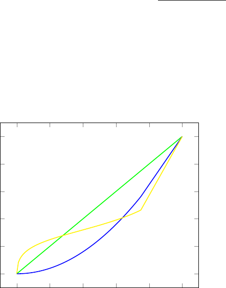

2.2 Exercise 2
When choosing between uncertain alternatives, Mary maximizes cumulative
prospect theory with a weighting (source) function for a ball drawn from an urn
with a known composition of balls (K) equal to the weighting function for the
performance of the Dow Jones index, both given by: wK(p) = wDOW (p) = p
2
.
The weighting function for balls drawn from an urn with an unknown composi-
tion of colored balls (U), as well as the weighting function for the performance
of the AEX index are given by wU(p) = wAEX(p) =
p
0.5
((p
0.5
+(1−p)
0.5
)
2
)
. Mary’s
utility function is u(x) = x
0.88
.
2.2.1 Exercise 2.a.
a)Show that Mary can be ambiguity seeking for unlikely events and ambiguity
averse for events of moderate likelihood when comparing lotteries with prizes
depending on balls drawn from either the risky or the unknown urn.
0 0.2 0.4 0.6 0.8 1
0
0.2
0.4
0.6
0.8
1
Figure 1: Graph of weighting functions
Figure 2.2.1 Comparison of weighting functions
The above graph shows the statements made in the question. If we look at
probabilities close to zero (say < 0.3) Mary prefers to bet on the unknown urn
compared to the risky urn since she over-weights the small probabilities since
they are above the 45
0
line (especially for probabilities that are close to zero).
When the probabilities are moderate to high Mary prefers to bet on the risky
urn however for both the unknown urn as for the risky urn she under-weights
the probabilities since they are below the 45
0
line.
Page : 4